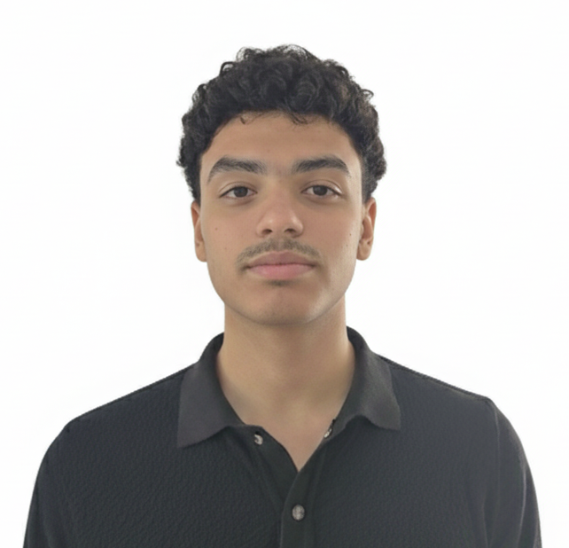

Étudiant en Licence 3 MIAGE à l’Université Côte d’Azur, je m’intéresse au développement informatique et aux bases de données. À l’aise avec la programmation, je souhaite mettre mes compétences au service de projets concrets en informatique.
Licence (Université Côte d’Azur) - MIAGE
2023 - présent
Informatique et Développement Logiciel
Conception, programmation et maintenance d’applications en C, C++,Java, R et Web, avec une solide base en algorithmique et architecture des systèmes.
Gestion des Entreprises et Management de Projet
Compréhension des enjeux organisationnels, gestion de projet agile, économie, droit et management pour relier technique et stratégie.
Analyse de Données et Systèmes d’Information
Modélisation de bases de données, business intelligence et analyse statistique pour optimiser la prise de décision.
Baccalauréat – Maroc
2022 - 2023
Sciences Physiques
Équipier polyvalent – McDonald's
4 mois en 2023 - 2024
Seven Wonders – Jeu de stratégie en Java
Développement du jeu Seven Wonders en Java avec gestion des cartes, des joueurs et des tours de jeu. Utilisation de JSON pour les données et de Mermaid pour la modélisation.
Valisp – Interpréteur LISP en C
Développement d’un interprteur LISP en C avec gestion de la mémoire (allocateur, garbage collector) et structures de données : listes chaînées, arbres, piles et graphes.
JustFootball – Site web de paris sportifs
Développement d’un site de paris sportifs avec gestion des utilisateurs et base de données. Technologies : HTML, CSS, JavaScript, PHP, SQL.